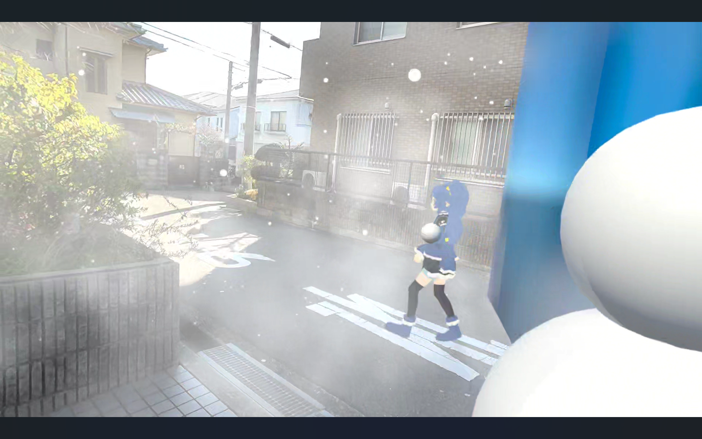

MR雪合戦
Unity / C#
MR技術を用いた雪合戦ゲーム。
4名で制作した。私は雪玉の物理挙動と特殊能力を担当した。Unityを用いた複数人での開発において、シーンファイルやプレハブの競合を避けるための作業分割とバージョン管理の連携に苦心した。また機能面では、MR環境において現実の感覚に近い雪玉の軌道を再現するための物理演算の微調整や、各メンバーが作成したシステム同士を統合して特殊能力を滞りなく作動させる工程で多くの試行錯誤を重ねた。